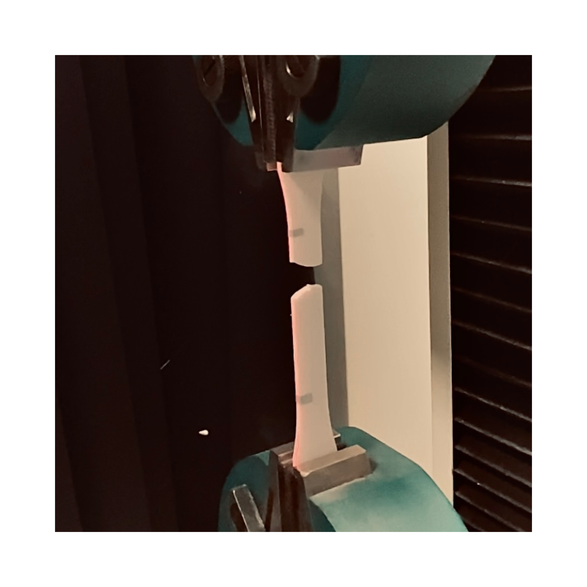
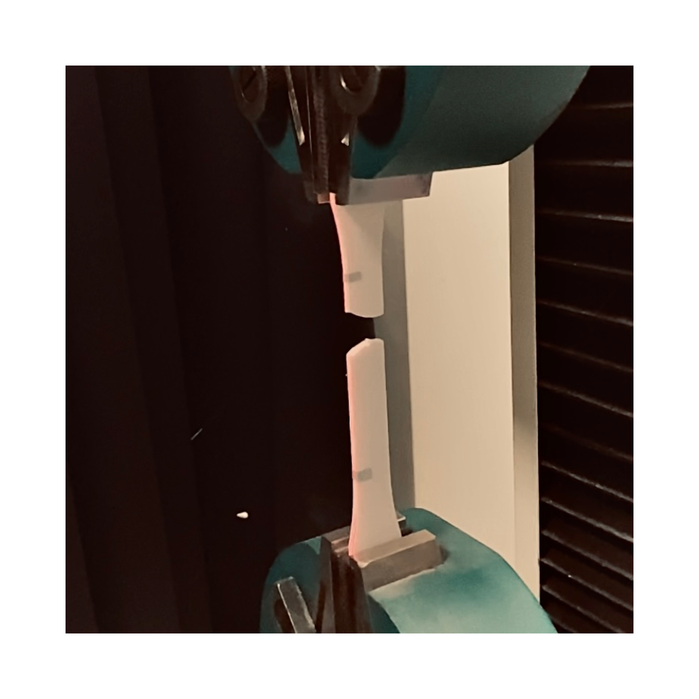

Polymer Additive Manufacturing
Fact or Friction?
Kieran Nar
PhD researcher investigating the friction and wear properties of Additively Manufactured (LS) polymer components.
Research topics include:
- Characterising Laser Sintered polymer surfaces.
- Investigating the mechanisms that influence laser sintered polymer top surfaces.
- Understanding the transient and steady-state sliding behaviours of polymer laser sintered components.
- Modifying the friction and wear properties of Laser Sintered polymer components by tailoring feedstock materials.
Gallery


 

Publications.
2023:
An investigation into the mechanisms that influence laser sintered polyamide-12 top surfaces
Rapid Prototyping Journal
2023:
Wear
2021:
A comprehensive characterisation of Laser Sintered Polyamide-12 surfaces
Journal of polymer testing
2020:
The Geometry of the roots of the Brachial Plexus
Journal of anatomy
Awards and grants.
2024
Jost Foundation travel grant - £1500 awarded
2023
Jost Foundation travel grant - £1500 awarded
STLE TriboLink 2023 Poster Award
STLE TriboLink 2023 Presentation Award - 3rd place
MAPP 2nd Annual Conference Poster Competition - 1st place
Design for AM: A Focus on Polymers 3-Minute Research Competition - 2nd place
2022
Univeristy of Sheffield mechanical engineering PGR poster presentation competition - 1st place
Jost Foundation travel grant - £1500 awarded